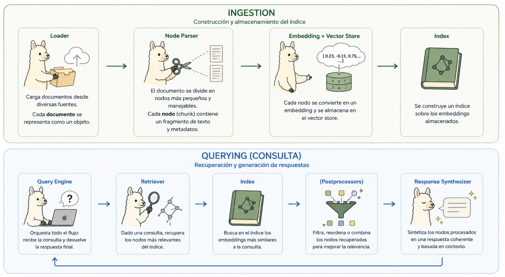
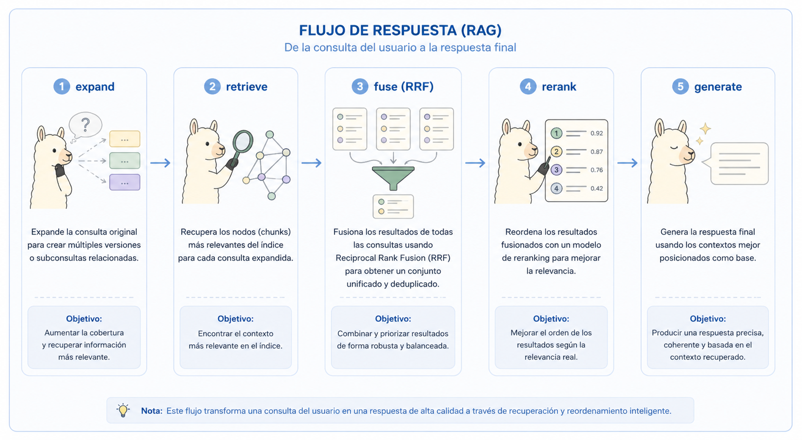
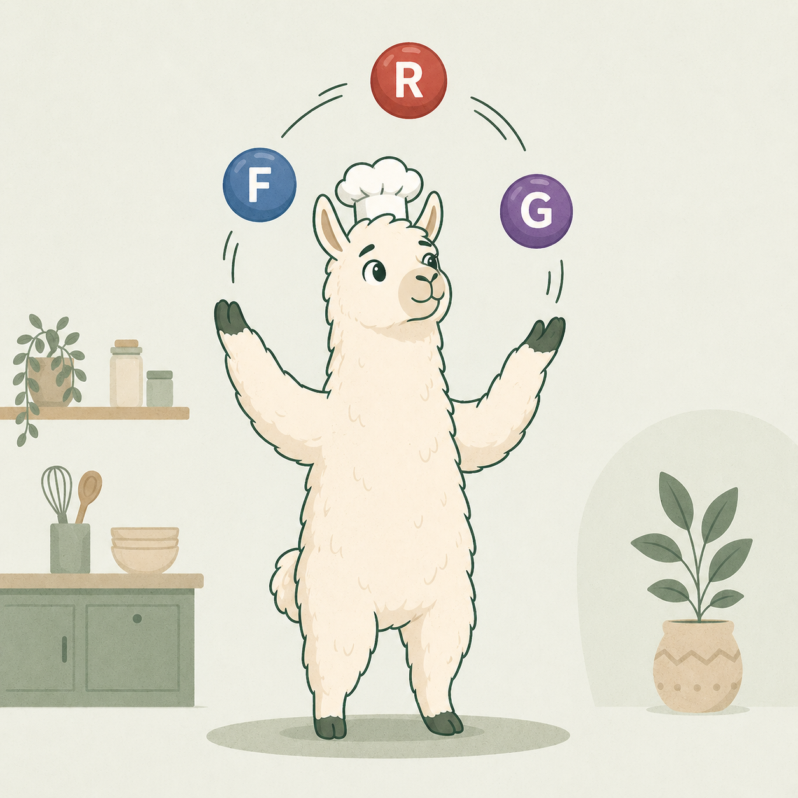

Un recorrido guiado por llamaindex_rag/service.py, pensado para entender el framework a partir de un sistema productivo (no de un quickstart).
La mayoría de los tutoriales de LlamaIndex te muestran VectorStoreIndex.from_documents(...) y un index.as_query_engine().query("..."). Quedan lindos en cinco líneas, pero no te preparan para las decisiones que aparecen cuando armás un RAG real: filtros que el framework no expone, pipelines con varios pasos, separación entre ingest y retrieve, testabilidad.
Este tutorial usa el camino opuesto. Vamos a leer un servicio RAG ya construido (backend/app/services/llamaindex_rag/service.py) y, paso a paso, vamos a ver qué pieza de LlamaIndex usa, por qué, y dónde decidió salirse de la ruta directa. Al terminar deberías poder construir uno parecido sin pelearte con el framework.
Antes de entrar al código, necesitás tener internalizadas unas pocas piezas y cómo se enganchan entre sí. LlamaIndex es, esencialmente, un framework para conectar tus datos con un LLM, y todas sus abstracciones existen para alguno de los pasos de ese viaje. Si tenés esto claro, el resto del tutorial fluye solo.
El "viaje" canónico que el framework modela es siempre el mismo:

Cada pieza es una abstracción con una interfaz base que podés extender. Esto es importante: todo en LlamaIndex es reemplazable mientras respetes el contrato. Vas a ver eso aplicado más adelante con el retriever custom.
Document y Node — las unidades de contenidoDocument: una unidad "grande" de contenido tal como la trae un loader. Por ejemplo, una página de un PDF, un archivo Markdown completo, una fila de una tabla. Tiene text y metadata (un dict libre).Node (típicamente TextNode): la unidad "chica" lista para indexar. Es el resultado de chunkear un Document. Hereda metadata del documento padre, tiene su propio id_ y mantiene relaciones (prev, next, parent) para reconstruir contexto.Los embeddings se calculan sobre nodos, no sobre documentos. Esa es la regla mental.
Document se rompe en Nodes con un overlap pequeño entre vecinos. Los embeddings se calculan sobre cada carita.PDFReader, SimpleDirectoryReader, etc.): convierte una fuente externa (archivo, URL, base de datos) en una lista de Document.SentenceSplitter, TokenTextSplitter, SemanticSplitter): convierte Documents en Nodes. Es el "chunker". Cada uno tiene una estrategia distinta: por oraciones, por tokens fijos, por similitud semántica.BaseEmbedding: el modelo que convierte texto a vectores. Implementaciones: OpenAIEmbedding, HuggingFaceEmbedding, etc. Tiene dos métodos clave: get_text_embedding (para indexar) y get_query_embedding (para preguntas). Importante usar el mismo modelo en los dos lados.VectorStore: la capa de persistencia de vectores. ChromaVectorStore, QdrantVectorStore, PineconeVectorStore, etc. Cada una envuelve el cliente nativo de su backend. La envoltura te da una API homogénea, pero te puede ocultar capacidades específicas del backend — esto va a ser importante después.Index — el corazón conceptualUn Index en LlamaIndex es una estructura de datos sobre tus nodos diseñada para hacer queries eficientes. Hay varios tipos según cómo organicen los nodos:
| Tipo de Index | Cómo organiza los nodos | Cuándo se usa |
|---|---|---|
VectorStoreIndex | Por similitud vectorial | El default para RAG. Es el que vas a ver en este tutorial. |
SummaryIndex | Lista secuencial; recorre todo | Para resúmenes sobre un corpus chico. |
TreeIndex | Jerarquía de resúmenes | Navegación top-down sobre documentos largos. |
KeywordTableIndex | Por keywords extraídas | Búsqueda léxica. |
KnowledgeGraphIndex | Triplas sujeto-relación-objeto | Razonamiento sobre relaciones. |
El VectorStoreIndex es básicamente "un envoltorio sobre un VectorStore" que sabe embeddear nodos al insertarlos y construir el retriever apropiado al consultarlos.
Index no es lo mismo que el VectorStore. El vector store es donde viven los vectores; el index es la lógica de "cómo meter cosas y cómo sacarlas". Podés tener el mismo vector store y construir múltiples índices sobre él.
VectorStoreIndex con y sin una vector DB?El VectorStoreIndex tiene dos modos de operar según qué VectorStore le pases por debajo. Esto es una de las cosas que más confunde al principio porque LlamaIndex hace que parezcan iguales:
| Modo | Vector store usado | Qué pasa internamente |
|---|---|---|
| Sin vector DB (default) | SimpleVectorStore — un dict en memoria |
Los vectores y los nodos viven en el proceso de Python. Se persisten serializando a JSON con index.storage_context.persist(persist_dir=...). Bueno para demos, scripts, datasets chicos. Se pierde si reiniciás el proceso y no llamaste a persist. |
| Con vector DB | ChromaVectorStore, QdrantVectorStore, PineconeVectorStore, etc. |
El index solo orquesta: cuando insertás nodos, llama al embedder y delega el "guardar el vector + metadata" al backend. Cuando consultás, embebe la query y delega "buscame los k más cercanos" al backend. La búsqueda ANN, los filtros, la persistencia y la escala son responsabilidad del backend. |
La diferencia mental importante: cuando hay una vector DB, el index pasa a ser una capa muy delgada. Casi no hace cómputo: traduce entre los tipos de LlamaIndex (TextNode, NodeWithScore) y los tipos del backend (los dicts crudos de Chroma, etc.). Por eso, en este código, VectorStoreIndex.from_vector_store(...) arranca instantáneamente: no carga datos en memoria, solo abre la conexión.
Y por eso también es viable saltarse al backend nativo cuando una abstracción no alcanza, como hace ChromaFilterRetriever en este código (lo vas a ver en la sección 5).
Retriever — quien hace la búsquedaUn Retriever recibe una query (envuelta en un QueryBundle) y devuelve una lista de NodeWithScore. Su única responsabilidad es seleccionar nodos relevantes, no generar respuestas.
Cada Index sabe construir su propio retriever (index.as_retriever(...)), pero la interfaz BaseRetriever es pública y podés implementar la tuya — exactamente lo que hace el código que vamos a leer.
k nodos más cercanos en el espacio vectorial.NodeWithScore y QueryBundleNodeWithScore: un Node + un score (float, "más alto = más relevante"). Es la moneda que circula entre retriever, postprocessors y response synthesizer.QueryBundle: la representación rica de una query. No es solo un string: tiene query_str, opcionalmente un embedding pre-calculado, y metadata. Permite que distintos componentes pasen información extra sin cambiar la interfaz.Un BaseNodePostprocessor recibe la lista de NodeWithScore después del retrieve y devuelve otra lista (filtrada, reordenada, recortada). Acá viven los rerankers, los filtros por similitud mínima, los deduplicadores, etc. Son opcionales pero muy comunes en pipelines serios.
Response Synthesizer y QueryEngineResponse Synthesizer: el componente que toma los nodos finales y los manda al LLM con un prompt para producir la respuesta. Tiene varias estrategias (compact, tree_summarize, refine) según cómo manejar contextos que no entran en una sola llamada.QueryEngine: la composición de extremo a extremo. Junta retriever + postprocessors + response synthesizer y expone un método query(str) → Response. Es lo que devuelve index.as_query_engine().Cuando armás algo a mano (como vamos a ver), subclaseás CustomQueryEngine e implementás custom_query(str) → str. Ahí decidís vos cómo se orquesta todo por dentro.
Settings y los singletons globalesSettings es un objeto global donde se configuran piezas compartidas: Settings.llm, Settings.embed_model, Settings.node_parser, Settings.callback_manager. Cuando una pieza necesita un LLM o un embedder y no se lo pasás explícito, lo toma de Settings.
Es muy cómodo (no tenés que pasar llm= en cada llamada) y muy peligroso (cambiarlo en un test puede tener efectos lejanos). En un servicio bien construido se configura una sola vez al arrancar.
StorageContext — el "donde vive todo"Un StorageContext agrupa los stores de persistencia: el vector_store (vectores), el docstore (texto y metadata de los nodos), el index_store (estructura del index). Cuando construís un VectorStoreIndex apuntando a un Chroma existente, lo hacés vía StorageContext.from_defaults(vector_store=...).
Esta distinción confunde al principio y vale la pena anclarla:
| Operación | Qué hace | Cuándo usarla |
|---|---|---|
VectorStoreIndex.from_documents(docs) |
Crea un índice nuevo, embeddea los documentos y los inserta | Demos, scripts one-shot, primera carga |
VectorStoreIndex.from_vector_store(store) |
Abre un índice como vista sobre un vector store ya poblado; no embeddea nada | Producción: el ingest corre aparte y la app solo consulta |
index.insert_nodes(nodes) |
Embeddea esos nodos y los mete en el store del índice | Cuando hacés el chunking vos y querés controlar IDs/metadata |
El servicio que vamos a leer usa from_vector_store para abrir, e insert_nodes para escribir. Nunca usa from_documents. Si entendés por qué, ya entendiste la mitad del archivo.
Documents. Node parser hace Nodes. Index + Embedding los meten en un VectorStore. Retriever los saca como NodeWithScore. Postprocessors los reordenan. Response Synthesizer los manda al LLM. QueryEngine es el que pega todo. Si tenés esto claro, el resto del tutorial es ver dónde el código aplica cada concepto y dónde decide hacer algo distinto.
Antes de pasar al código, despejemos las preguntas que aparecen una y otra vez en foros y discusiones del framework. Si vas a leer documentación, blogs o snippets ajenos, esto te va a ahorrar varias confusiones.
Las dos librerías tocan lo mismo (datos + LLMs) pero resuelven capas distintas:
No son competidores estrictos: en producción muchos los combinan (LlamaIndex para retrieve + LangChain para orquestar el agente que usa ese retrieve como tool). Este proyecto tiene una rama de cada uno justamente para comparar.
QueryEngine, ChatEngine o agente?Acá hay un punto que confunde mucho: memoria de la conversación y pieza del framework son cosas distintas. Una cosa es quién mantiene el historial de turnos, y otra es qué clase concreta de LlamaIndex usás como entrypoint. La tabla:
| Pieza | Cuándo usarla | ¿La pieza maneja la memoria por vos? |
|---|---|---|
QueryEngine (incluido CustomQueryEngine) |
El framework te da un query(str) → Response stateless. Ideal cuando querés controlar vos cómo se arma el prompt, qué pasos se ejecutan, qué cache se usa, etc. |
No. Si querés memoria, la mantenés vos a nivel aplicación e inyectás el historial en el prompt manualmente. |
ChatEngine |
Conversación multi-turno con la memoria integrada al objeto. Tres modos: condense_question (reescribe la pregunta usando la historia, después corre el query engine), context (retrieve por mensaje + historia en el system prompt), condense_plus_context (combina los dos). |
Sí. El engine recibe un memory: BaseMemory y se ocupa de leerla / escribirla en cada chat(). |
Agent |
El LLM decide qué tool usar (RAG, calculadora, API externa…) y en qué orden. Razonamiento multi-paso. | Sí. Memoria + un "scratchpad" del proceso de decisión. |
CustomQueryEngine y no ChatEngine si igual mantiene memoria?Es la pregunta correcta y vale aclararla bien, porque a primera vista la columna "no maneja memoria" del QueryEngine contradice lo que ves en el código (los append_turn / recent_messages). La distinción importante es:
ChatEngine se hace cargo de la memoria por vos: vos le pedís engine.chat(msg) y él lee la historia, reformula la pregunta si hace falta, llama al retrieve, llama al LLM, y guarda el turno. Todo opaco.CustomQueryEngine el framework no toca memoria: vos sos dueño del flujo. La memoria existe (en este código vive en memory.py como un ChatMemoryBuffer singleton), pero la inyectás manualmente en el prompt de la etapa de generación. Concretamente, dentro de RagQueryEngine.custom_query:
messages = build_prompt(
context=format_nodes(reranked),
nonce=secrets.token_hex(NONCE_BYTES),
question=sanitize_question(query_str),
history=recent_messages(), # ← acá entran los últimos N turnos
)
response = self.llm.chat(messages=messages)
append_turn(safe_question, answer) # ← acá se persiste el turno actualChatEngine, solo que orquestada por el código de la app en vez del framework.
¿Y por qué hacerlo así si el ChatEngine ya lo resuelve? Tres razones que aparecen al leer el resto del archivo:
build_prompt. Con ChatEngine heredás los templates del framework y para imponer este formato tendrías que sobreescribirlos — más código que el camino directo.ChatEngine. Acá el flujo es expand → retrieve × N → fuse RRF → rerank. condense_question reformula la pregunta y corre una retrieval; no soporta nativamente las múltiples queries + RRF. Para encajarlo igual habría que envolver toda la pipeline en un retriever custom solo para que ChatEngine la consuma — el envoltorio cuesta lo mismo que orquestarlo afuera.RunnableWithMessageHistory, que es el equivalente LCEL: una capa de memoria alrededor de un chain stateless, no un objeto stateful como ChatEngine). Tener las dos ramas con la misma forma facilita la comparación lado a lado.En resumen: la fila "QueryEngine — no recuerda turnos previos" de la tabla se refiere a el objeto del framework, no a la app entera. La memoria de corto plazo del MVP funciona y se ve en el prompt — solo que el orquestador es build_prompt(history=...) + append_turn, no ChatEngine.
Settings vs ServiceContext — ¿cuál usar?Solo Settings. ServiceContext está deprecado desde LlamaIndex v0.10. Si encontrás tutoriales viejos que pasan service_context=... a VectorStoreIndex, ignorá esa parte: la nueva API es asignar una vez a Settings.llm / Settings.embed_model y listo. Las piezas que necesitan un LLM o un embedder lo toman lazy de Settings si no se lo pasás explícitamente.
Index si yo solo necesito buscar texto?Para 95% de los casos de RAG conviene VectorStoreIndex. Los otros (SummaryIndex, TreeIndex, KeywordTableIndex, KnowledgeGraphIndex) existen para casos donde el problema NO es "encontrar el chunk parecido a la pregunta" sino "resumir todo", "navegar jerárquicamente", "buscar por keyword exacta", o "razonar sobre relaciones". Si arrancás con RAG clásico y no sabés cuál usar, usá VectorStoreIndex y volvés cuando aparezca el caso de uso real.
Top-k: cuántos nodos te trae el retrieve. Más alto = más recall pero más ruido y más tokens en el prompt. En este código, TOP_K_PER_QUERY=5 por retrieval y TOP_K_FINAL=3 después del rerank.
Similitud coseno: la métrica que usa Chroma por default para decidir "qué tan parecidos son dos vectores". Va de 0 (ortogonales) a 1 (idénticos). Chroma devuelve distancia coseno (1 − similitud), por eso en el código ves score = 1.0 - distance para invertir el sentido.
service.py: cada método público con qué hace, listo para mirar de un vistazo.LlamaIndex se piensa como un conjunto de piezas componibles. Estas son las que aparecen en el archivo:
| Pieza | Para qué sirve | Dónde aparece |
|---|---|---|
Document / TextNode | Unidades de contenido (un PDF entero / un chunk) | _ingest, retriever |
PDFReader | Loader: PDF → Document por página | _ingest |
SentenceSplitter | Chunker token-aware | _ingest |
VectorStoreIndex + ChromaVectorStore | Índice vectorial (vista sobre Chroma) | db_comm.py y _ingest |
BaseRetriever | Interfaz "dame nodos para esta query" | ChromaFilterRetriever |
BaseNodePostprocessor | Reordenar/filtrar nodos tras el retrieve | InfinityRerank |
CustomQueryEngine | El pipeline completo como objeto de primera clase | RagQueryEngine |
Settings | Singletons globales (LLM, embedder) | db_comm._configure_settings |
El pipeline RAG que arma RagQueryEngine.custom_query es el canónico de cinco pasos:

RagQueryEngine.custom_query.db_comm.py) — el preámbuloAntes de entrar a service.py, conviene ubicar lo que ya está construido en su módulo vecino. Acá viven los singletons:
import chromadb
from llama_index.core import StorageContext, VectorStoreIndex
from llama_index.embeddings.openai import OpenAIEmbedding
from llama_index.vector_stores.chroma import ChromaVectorStore
# --- 1. Cliente y colección NATIVOS de Chroma ----------------------
@lru_cache(maxsize=1)
def _get_chroma_collection():
# Devuelve la colección directa de la lib chromadb,
# SIN pasar por LlamaIndex. Esto es lo que después
# nos deja usar el dialecto $contains de Chroma.
client = chromadb.HttpClient(host=CHROMA_HOST, port=CHROMA_PORT)
return client.get_or_create_collection(
name=COLLECTION_NAME, metadata={"hnsw:space": "cosine"}
)
# --- 2. Embedder (singleton) ---------------------------------------
@lru_cache(maxsize=1)
def _get_embed_model():
# El MISMO modelo se usa al ingestar y al consultar.
return OpenAIEmbedding(model=EMBEDDING_MODEL)
# --- 3. Adapter LlamaIndex sobre la colección Chroma ---------------
@lru_cache(maxsize=1)
def get_vector_store():
# Envuelve la colección nativa con el tipo que LlamaIndex entiende.
return ChromaVectorStore(chroma_collection=_get_chroma_collection())
# --- 4. StorageContext: agrupa los stores de persistencia ----------
@lru_cache(maxsize=1)
def get_storage_context():
return StorageContext.from_defaults(vector_store=get_vector_store())
# --- 5. El índice: VISTA delgada sobre el vector store -------------
@lru_cache(maxsize=1)
def get_index() -> VectorStoreIndex:
_configure_settings()
# `from_vector_store` NO carga datos: solo abre la conexión.
return VectorStoreIndex.from_vector_store(
vector_store=get_vector_store(),
storage_context=get_storage_context(),
embed_model=_get_embed_model(),
)
El módulo arma los singletons en cinco capas, cada una con una responsabilidad clara. Vale la pena recorrerlas en orden porque cada una depende de la anterior:
_get_chroma_collection() abre el cliente HTTP de Chroma y obtiene la colección. Devuelve el objeto nativo de la librería chromadb, sin envoltorios. Esto es lo que después le permite a ChromaFilterRetriever usar el dialecto $contains de Chroma (sección 5)._get_embed_model() instancia el embedder de OpenAI. Una sola vez, así garantiza que el mismo modelo embedee tanto al ingestar como al consultar (si fueran distintos, los vectores no serían comparables).get_vector_store() toma la colección nativa de (1) y la envuelve en ChromaVectorStore, que es el adapter que LlamaIndex sabe consumir. A partir de acá, el código está "del lado LlamaIndex".get_storage_context() agrupa los stores de persistencia (vectores, docstore, index store) en un único objeto. Acá solo registra el vector store; los otros usan defaults en memoria.get_index() construye el VectorStoreIndex con .from_vector_store(...). Es la línea más importante del archivo: no embeddea ni carga nada en memoria, solo abre una vista lógica sobre lo que ya vive en Chroma. Por eso arrancar la app es instantáneo aunque la colección tenga miles de chunks.VectorStoreIndex.from_documents(docs), que mete los documentos y los embeddea en el momento. Acá el ingest está separado y el índice se construye vacío sobre la colección existente. Esto es lo que querés cuando el ingest corre como un job aparte y la app no tiene que re-procesar todo al arrancar.
El otro detalle del archivo es Settings:
def _configure_settings() -> None:
if Settings.embed_model is None or not isinstance(Settings.embed_model, OpenAIEmbedding):
Settings.embed_model = _get_embed_model()
Settings.llm = _get_llm()
Settings es un singleton global de LlamaIndex. Si no le pasás llm= o embed_model= a una pieza, los toma de acá. Por eso configurarlo una vez al construir el índice ahorra repetir argumentos en cada llamada.
Primer detalle de service.py que vale la pena entender:
@lru_cache(maxsize=1)
def _tokenizer_fn():
# Tiktoken encoder aligned with the embedding model.
return tiktoken.encoding_for_model(EMBEDDING_MODEL).encode
El SentenceSplitter corta por tokens, no por caracteres. Si no le pasás un tokenizer, usa el default de GPT-2, que cuenta distinto que el del modelo de embeddings.
Pasarle el tokenizer del modelo de embedding asegura que chunk_size=500 realmente sean ~500 tokens del lado del embedder, evitando truncados sutiles. Es una decisión "fina" pero importante para reproducibilidad y para no quedar cerca del límite del modelo sin querer.
tiktoken es la librería oficial de OpenAI para tokenización y trae los archivos de vocabulario / merges embebidos en el paquete pip para todos los modelos conocidos (GPT-3.5, GPT-4, las familias text-embedding-*, etc.). Cuando llamás a tiktoken.encoding_for_model("text-embedding-3-small"), levanta los datos desde disco y arma un encoder local — todo el chunking corre offline. La única vez que sale a la red es la primera vez que pedís un encoder cuyo vocabulario no esté ya en el cache local de la librería, y eso solo lo descarga (no envía nada).
ChromaFilterRetriever — por qué un retriever customEsta es la decisión más gris del archivo y la más educativa. Vamos despacio.
Si abrís cualquier tutorial de LlamaIndex, el retriever se hace así (al "path por defecto del framework" lo vamos a llamar de acá en adelante el path stock):
retriever = index.as_retriever(
similarity_top_k=10,
filters=MetadataFilters(filters=[
MetadataFilter(key="source", value="book.pdf"),
]),
)
Funciona perfecto para filtros tipo field == value.
El sistema necesita filtros tipo $contains sobre el texto del documento (la búsqueda "capítulo N" usa where_document={"$contains": "..."}, una capacidad nativa de Chroma). LlamaIndex no expone ese dialecto a través de MetadataFilters — solo cubre los operadores comunes a todos los vector stores que soporta.
En vez de pelearse con la abstracción, el retriever habla directo a la colección de Chroma:
class ChromaFilterRetriever(BaseRetriever):
def _retrieve(self, query_bundle: QueryBundle) -> list[NodeWithScore]:
# (1) Embebemos la query A MANO con el mismo modelo del ingest.
embed_model = _get_embed_model()
query_embedding = embed_model.get_query_embedding(query_bundle.query_str)
# (2) Armamos los kwargs para el cliente NATIVO de chromadb.
kwargs: dict = {
"query_embeddings": [query_embedding],
"n_results": self._similarity_top_k,
"include": ["documents", "metadatas", "distances"],
}
if self._where is not None:
kwargs["where"] = self._where
if self._where_document is not None:
# Capacidad de Chroma que el path stock NO expone.
kwargs["where_document"] = self._where_document
# (3) Llamada directa a la colección Chroma. Devuelve dicts crudos:
# {"documents": [[...]], "metadatas": [[...]], "distances": [[...]]}
result = _get_chroma_collection().query(**kwargs)
# (4) Reconstruimos TextNode + NodeWithScore desde esos dicts
# y convertimos distancia → score (1 - distance) para que
# el resto del pipeline (rerank) lea "más alto = mejor".
# ... ver service.py para el detalle del loop ...
Cada bloque numerado del snippet corresponde a un detalle que en el path stock no tendrías que escribir:
index.as_retriever(...)) el retriever embebe la query internamente. Acá, como hablás directo al cliente chromadb, te toca a vos. Lo crítico es usar exactamente el mismo embed_model que usaste al ingestar — de ahí la importancia del singleton de la sección 3. Si usaras otro modelo, los vectores no son comparables y los resultados son ruido.where filtra por metadata exacta (igual que el path stock), pero where_document aplica operadores sobre el TEXTO del chunk — incluido $contains, que es lo que la abstracción MetadataFilters de LlamaIndex no expone. Esta es la razón de fondo de todo el archivo._get_chroma_collection().query(**kwargs) devuelve un diccionario con listas de listas (Chroma soporta múltiples queries por request, por eso el doble nesting). Hay que indexar [0] para quedarte con la única query que mandaste.ChromaVectorStore, Chroma no te devuelve NodeWithScore sino dicts crudos. Tenés que envolverlos a mano para que el resto del pipeline funcione. Y dado que Chroma devuelve distancia coseno (más bajo = mejor) y LlamaIndex espera score (más alto = mejor), aplicás score = 1.0 - distance.BaseRetriever mantiene la pieza compatible con el resto del ecosistema (rerankers, query engines), aunque por dentro saltees a la API nativa.
RagQueryEngine — el pipeline como CustomQueryEngineOtro punto donde se podría haber hecho algo más simple y se eligió lo "framework-native".
Directo: orquestar los 5 pasos como funciones sueltas dentro del query() del servicio.
Elegido: subclasear CustomQueryEngine. Ventajas:
CallbackManager global (Settings.callback_manager) que se entera automáticamente cuando un objeto del framework arranca o termina cada uno de sus eventos internos (EventPayload.QUERY, RETRIEVE, LLM, etc.). Si subclaseás CustomQueryEngine, tu pipeline emite esos eventos sin que escribas una sola línea de logging — y plug-ins como Arize Phoenix, Langfuse, OpenInference o el handler oficial LlamaDebugHandler los consumen automáticamente para mostrarte traces, latencias por paso y costos por request en una UI.QueryEngine se puede envolver en un QueryEngineTool con una sola línea (QueryEngineTool.from_defaults(engine, name="rag_libros", description="...")) y entregárselo a cualquier agente del framework (FunctionAgent, ReActAgent, etc.) como una herramienta entre otras (calculadora, búsqueda web, APIs externas). El agente decide cuándo invocarlo. Si nuestro pipeline fuera un puñado de funciones sueltas, habría que escribir el adapter a mano.QueryPipeline, en routers y en transforms del framework sin glue code.custom_query, response_gen), lo que hace que el código se lea como "más LlamaIndex" para alguien que viene de la documentación oficial.class RagQueryEngine(CustomQueryEngine):
model_config = ConfigDict(arbitrary_types_allowed=True)
# Pydantic fields — LlamaIndex query engines are pydantic models.
llm: LLM
reranker: InfinityRerank
retriever_factory_where: Optional[dict] = None
retriever_factory_where_document: Optional[dict] = None
engine_name: str = "llamaindex"
Cosas a notar:
__init__. Esto es muy distinto a la mayoría de clases Python que vas a haber visto.arbitrary_types_allowed=True es necesario porque LLM e InfinityRerank no son tipos pydantic-friendly. Sin esto, pydantic se queja al instanciar.custom_query(self, query_str: str) -> str. Ese es el contrato que pide CustomQueryEngine.custom_querydef custom_query(self, query_str: str) -> str:
# Paso 1: expandir. La query original queda en el índice 0 para que
# siempre pese en el RRF, incluso si las paráfrasis derivan de tema.
expansions = expand_queries(query_str)
queries = [query_str, *expansions]
# Paso 2: retrieve (una corrida por cada query)
ranked_lists = []
for q in queries:
retriever = ChromaFilterRetriever(
similarity_top_k=TOP_K_PER_QUERY,
where=self.retriever_factory_where,
where_document=self.retriever_factory_where_document,
)
hits = retriever.retrieve(q)
ranked_lists.append(hits)
# Paso 3: RRF fuse (dedup por contenido del nodo, top-N por score)
if len(ranked_lists) == 1:
candidates = ranked_lists[0]
else:
candidates = [node for _, node in rrf_fuse_nodes(ranked_lists)]
# Paso 4: rerank
reranked = self.reranker.postprocess_nodes(
candidates, query_bundle=QueryBundle(query_str=query_str)
)
# Paso 5: generate
messages = build_prompt(
context=format_nodes(reranked),
nonce=secrets.token_hex(NONCE_BYTES),
question=sanitize_question(query_str),
history=recent_messages(),
)
response = self.llm.chat(messages=messages)
answer = str(response.message.content or "")
append_turn(safe_question, answer)
return answer
Cuatro cosas para subrayar:
expand_queries(query_str), que pide al LLM (vía response_format=json_object) N_EXPANDED=2 paráfrasis. La query original se mantiene como queries[0]: si las paráfrasis se desvían del tema, el ranking original sigue pesando en la fusión.top_k=5. Eso da hasta 15 candidatos.BaseNodePostprocessor — interfaz nativa. Recibe la lista y un QueryBundle, que es la representación que LlamaIndex usa para queries (encapsula el string + opcionalmente embedding + metadata). self.llm.chat(messages=...) devuelve un ChatResponse cuyo contenido vive en .message.content.score(doc) = Σ 1 / (k + rank_i), sumada sobre cada lista donde el doc aparece. Constante k=60 (Cormack, Clarke & Büttcher 2009) — un valor alto suaviza la diferencia entre los primeros puestos, lo que evita que un único top-1 domine. En el código, rrf_fuse_nodes dedupea por node.get_content(): dos nodos con el mismo texto se colapsan a una entrada cuya score es la suma de sus contribuciones. El resultado se trunca a TOP_K_AFTER_FUSION=10 antes de mandarlo al reranker.
(query, candidato) en conjunto y le pone un score de relevancia mucho más fino. Es más lento por candidato (corre el modelo entero por cada par) pero solo lo aplicás a los top-10, no a toda la base — por eso la pipeline tiene retrieve + rerank en vez de un único paso. Acá el reranker es un servicio HTTP (Infinity, sirviendo gte-multilingual-reranker-base) y se queda con los TOP_K_FINAL=3 mejores. Esos 3 son los únicos chunks que terminan en el prompt del LLM.
append_turn(safe_question, answer). Esto guarda el par pregunta/respuesta en un ChatMemoryBuffer que vive en memoria del proceso (módulo memory.py), recortado a las últimas N entradas. La próxima vez que entre una query, recent_messages() trae esos turnos previos para inyectarlos en el prompt vía build_prompt(... history=...). Como dato sutil pero importante: append_turn se llama después del llm.chat, así que si la generación falla, no contaminás la ventana de memoria con un turno medio escrito.

QueryEngine hace malabares con los pasos: Retrieve, Fuse, Generate.LlamaindexSrv — el servicioImplementa la interfaz abstracta RagService. Tiene cuatro piezas que vale la pena ver de a una.
_ingest — el flujo de ingestaLa forma "100% LlamaIndex" de ingerir documentos:
reader = PDFReader()
for pdf_path in pdf_paths:
pages = reader.load_data(pdf_path)
for page_doc in pages:
page_label = page_doc.metadata.get("page_label", "1")
page_idx = int(page_label) - 1
page_doc.metadata = {"source": pdf_path.name, "page": page_idx}
documents.extend(pages)
splitter = SentenceSplitter(
chunk_size=CHUNK_TOKENS,
chunk_overlap=CHUNK_OVERLAP_TOKENS,
tokenizer=_tokenizer_fn(),
)
nodes = splitter.get_nodes_from_documents(documents)
ids = build_chunk_ids(...)
for n, nid in zip(nodes, ids):
n.id_ = nid
index = get_index()
for start in range(0, len(nodes), INGEST_BATCH_SIZE):
index.insert_nodes(nodes[start:start + INGEST_BATCH_SIZE])
Puntos a destacar:
PDFReader devuelve page_label (string, 1-indexed). Se reescribe a {"source", "page"} (0-indexed) para que sea idéntico a lo que escribe la rama LangChain del proyecto — así los filtros funcionan igual en ambos engines.index.insert_nodes(...) es el método del VectorStoreIndex para meter nodos ya formados. No re-chunkea, no re-parseaa: embeddea y guarda. Por eso primero usás SentenceSplitter afuera y después insert_nodes.index.insert_nodes(batch), el índice agrupa los textos del batch y le manda una sola request a la API de embeddings de OpenAI con todos esos textos como input. Esa API soporta nativamente input batch (hasta 2048 textos por request), lo que reduce drásticamente el overhead de red comparado con embeddear uno por uno. ¿Por qué 256 y no 2048? Por dos razones: (a) deja margen sobre el límite duro y evita errores tipo "request demasiado grande" si los chunks son largos; (b) si una request falla por un 5xx transitorio, retryar 256 chunks es barato — retryar 2048 dolería más. 256 es el sweet spot entre throughput y costo de retry._retrieve y _generate — los hooksHooks que cumplen el contrato de la clase abstracta. _retrieve es básicamente "una vuelta del retriever". _generate es "una vuelta del prompt + LLM + memoria". Existen para testabilidad y para satisfacer la interfaz; el flujo real de producción pasa por query().
query() — el override que arma tododef query(self, msg: str) -> str:
intent = detect_positional(msg)
where, where_doc = None, None
if intent is not None:
manifest = load_manifest(self.engine_name)
where, where_doc = build_filter(intent, manifest)
engine = self._build_query_engine(where=where, where_document=where_doc)
return engine.custom_query(msg)
Lo que hace de distinto vs. la implementación abstracta default:
where, where_document).RagQueryEngine con esos filtros y delega custom_query(msg).detect_positional(msg) usa regex para reconocer esos patrones (página N, capítulo N, al final, al principio) y, si matchea, devuelve un PositionalIntent = (kind, value) que el resto del flujo traduce a un filtro de Chroma antes del retrieval. La similitud vectorial sigue corriendo, pero acotada al subconjunto de chunks que cumplen el filtro.
backend/app/data/ingested_llamaindex.json) que mantiene un mapa {filename → cantidad_de_páginas} de cada PDF que se ingestó. Se actualiza cuando corrés el ingest. ¿Para qué se usa? Para los intents tipo "al final" o "al principio": necesitamos saber cuántas páginas tiene cada libro para construir un filtro tipo "páginas entre n_pages - 10% y n_pages - 1". Sin el manifest, no se podría calcular esa ventana. load_manifest(self.engine_name) usa engine_name ("llamaindex" o "langchain") para leer el archivo correcto — cada engine mantiene su propio manifest porque pueden tener corpus distintos.
RagQueryEngine es básicamente construir una clase pydantic vacía — el costo es despreciable.
_index con @cached_property@cached_property
def _index(self) -> VectorStoreIndex:
return get_index()
Se usa @cached_property (no @lru_cache) porque está ligado a la instancia. Esto es importante para tests: si en un test parchás get_index, una nueva instancia del servicio toma el mock; con @lru_cache quedaría capturado a nivel módulo y los tests se contaminarían entre sí.
@cached_property sobre @lru_cache sería suficiente bandera amarilla como para revisarlo (¿podríamos haber hecho los tests más independientes? ¿no estamos dejando un acoplamiento implícito?). Acá nos lo permitimos porque es un MVP educativo y la diferencia entre los dos decoradores también tiene un argumento legítimo (el ciclo de vida del singleton es por servicio, no global), pero vale dejarlo dicho para que no internalices el patrón como buena práctica.
Estas son las que valen la pena recordar para tu propio código:
| Decisión | Camino directo (quickstart) | Por qué se hizo distinto |
|---|---|---|
| Retriever custom sobre Chroma raw | index.as_retriever(filters=MetadataFilters(...)) |
MetadataFilters no expone $contains; necesario para filtros full-text |
Index from_vector_store |
VectorStoreIndex.from_documents(...) |
El ingest se hace aparte; el índice solo es una vista, no re-embeddea al arrancar |
Tokenizer custom en SentenceSplitter |
dejar el default | El default es GPT-2; para que chunk_size=500 represente tokens del modelo de embedding hay que pasarle ese tokenizer |
Subclasear CustomQueryEngine |
orquestar a mano en el servicio | Convierte el pipeline en componente nativo (callbacks, instrumentación, composabilidad) |
| Re-construir engine por request | cachearlo | Cada request puede traer filtros distintos (página, capítulo, "al final"…), así que el engine no se puede cachear. Lo importante es que esto sale gratis: el LLM, el embedder, el cliente Chroma y el índice ya viven cacheados a nivel módulo (singletons), así que instanciar el RagQueryEngine es solo construir una clase pydantic. |
append_turn después del llm.chat |
guardar antes/durante | Evita corromper la memoria si falla la generación |
Normalizar page_label → page |
dejar la metadata que da PDFReader |
Paridad con la rama LangChain para que build_filter funcione en ambos |
@cached_property para _index |
@lru_cache o cachear en __init__ |
Evita contaminación entre tests cuando se patchea get_index |
Si llegaste hasta acá, ya tenés un mapa razonable del framework. Próximos pasos naturales:
for q in queries. Como no comparten estado, podés mandarlas a un ThreadPoolExecutor o usar la versión async (aretrieve) y juntarlas con asyncio.gather. Para 3 queries el ahorro ronda los ~200 ms.QueryPipeline. En vez de orquestar los 5 pasos a mano dentro de custom_query, los declarás como un grafo de módulos y dejás que LlamaIndex resuelva las dependencias. Sirve cuando querés ramificación condicional (ej.: "si la query es muy corta, saltea expansión") o cuando vas a tener varios QueryEngine con piezas compartidas. Ejemplo mínimo:
from llama_index.core.query_pipeline import QueryPipeline, InputComponent
p = QueryPipeline(verbose=True)
p.add_modules({
"input": InputComponent(),
"retriever": my_retriever,
"reranker": my_reranker,
"synth": get_response_synthesizer(),
})
p.add_link("input", "retriever")
p.add_link("retriever", "reranker")
p.add_link("reranker", "synth", dest_key="nodes")
p.add_link("input", "synth", dest_key="query_str")
response = p.run(input="¿qué dice el capítulo 3?")
RouterComponent que decide a qué retriever ir según la query.Settings.callback_manager. Si conectás un handler, ves la pipeline desde adentro sin tocar el código de custom_query. Ejemplo con el handler oficial de debug:
from llama_index.core import Settings
from llama_index.core.callbacks import CallbackManager, LlamaDebugHandler
debug = LlamaDebugHandler(print_trace_on_end=True)
Settings.callback_manager = CallbackManager([debug])
# Después de cada srv.query(...) imprime el trace completo:
# |_query -> 1.4s
# |_retrieve -> 0.3s
# |_LLM -> 1.0s
# También accesible programáticamente:
events = debug.get_event_pairs(CBEventType.LLM)
LlamaDebugHandler por handlers que mandan los eventos a Arize Phoenix, Langfuse, OpenInference/OTel o Helicone — todos tienen integraciones nativas con LlamaIndex.InfinityRerank. Es un buen ejemplo de cómo extender BaseNodePostprocessor con tu propio servicio de reranking.La clave del framework, una vez que lo entendés, es esta: las interfaces base (BaseRetriever, BaseNodePostprocessor, CustomQueryEngine) son el contrato. Mientras respetes esos contratos, el "cómo" interno puede ser todo lo que necesites — incluso saltarte al backend nativo, como hace este código.